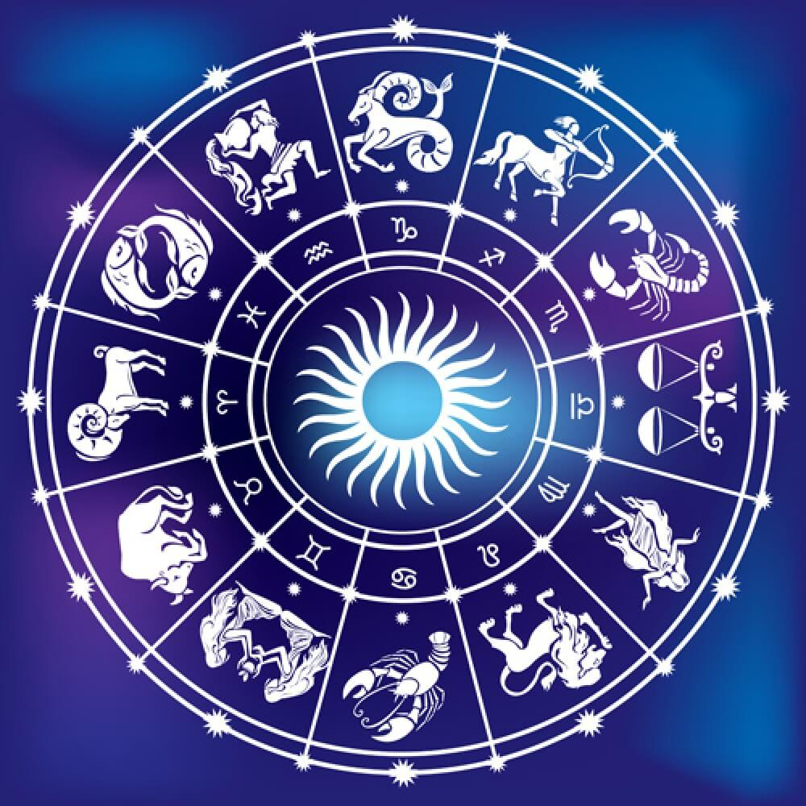
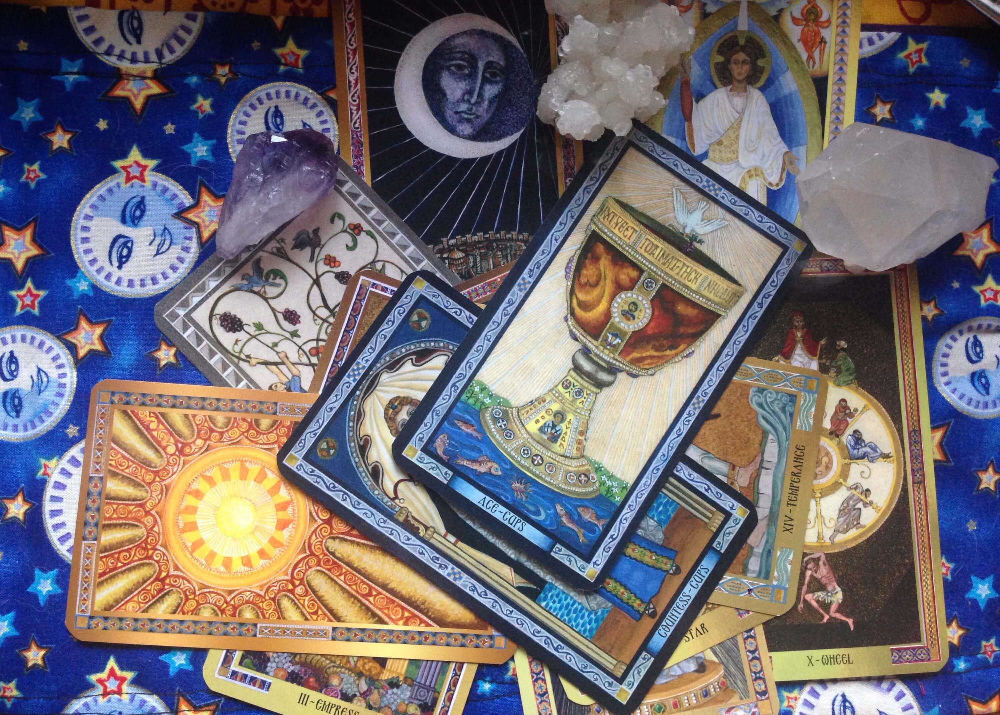

ASRC is an Astro institute running from the past 6 years. Various courses are taught by our faculty headed by Dr.Shalini Behl herself. People can take the benefit of learning in either English or Hindi. Minimum age required for pursuing the course is 18 years. People have gain a lot of confidence under her guidance and have confidently started their new lives . Many have started practicing them and taken up as their profession.
Following are the courses being taught at ASRC:
ASTROLOGY

It refers to the study of the rotations and relative positions of various celestial objects which provide divining information about human affairs .Hindu astrology or the classical Indian astrology is based on early medieval compilations, namely the Parashar Horashashtra.
Jyotisha is the customary Hindu arrangement of crystal gazing, otherwise called Hindu Astrology, and all the more as of late Vedic Astrology.
Here at ASRC, Astrology is taught at 3 different levels:
1) Two days’ workshop
2) 6 Months course (Basic astrology covering predictive astrology, general astrology, vedic astrology, dashas, and Transit.)
3) Specialization (Marriage, Children, Mahurata, Profession, Medical,etc.)
NUMEROLOGY
Numerology is a divine interconnection between numbers and occasions. It is additionally the investigation of the numerical estimation of the letters in words, names and thoughts. It is regularly connected with the paranormal, related to astrology and comparable divinatory expressions.
It is a great science,perhaps its greatest value is in its capacity to help you access your personal strength and weakness as well as provide you with an intuitive snapshot on another person’s trait. Its basic concepts are:
- How to familiarize yourself with each numbers and their key traits.
- How to determine yourself, your path ,your numbers, expression numbers.
- How to determine roughly what age you enter your life cycle and how they will impact your life.
At ASRC, Numerlogy is taught at 2 levels:
1) Two days’ workshop
2) 3 Months course
TAROT CARDS
 The tarot cards are utilized from the mid-fifteenth century in different parts of Europe to play a gathering of card diversions, for example, Italian tarocchini and French tarot. From the late eighteenth century until the present time the tarot has likewise discovered use by spiritualists and occultists for divination.
At ASRC, Tarot Cards are taught at 2 levels:
1) Two days’ workshop
2) 3 Months course
VASTUSHASHTRA
Vastu shastra is a traditional Hindu system of architecture which means science of architecture. Vastu Shastras fuse customary traditional Hindu and in some cases Buddhist convictions.The outlines are planned to coordinate design with nature, the relative elements of different parts of the structure, and antiquated convictions using geometric examples (yantra), symmetry and directional arrangements.
At ASRC, Vastushashtra are taught at 2 levels:
1) Two days’ workshop
2) 3 Months course
KP (NADI)
The Krishnamurti Paddhati (KP) arrangement of astrological forecast was imagined by Sothia Mannan Jyotish Marthand late Prof. KS Krishnamurti (1908-1972) in mid 1960s. The KP strategy depends on the crucial principles of customary crystal gazing subsequent to the 9 planets ,12 rashis the bhavas and the 27 star groupings are same in their impact and connotations in KP as they are in conventional soothsaying
It is a typical thought in the psyches of numerous KP learners and specialists that the innovator of KP, late KS Krishnamurti discredited the Vedic arrangement of astrology as it is practised in India.
Here at ASRC, Tarot Cards are taught at 2 levels:
1) Two days’ workshop
2) 3 Months course
HEALING & MEDITATAION

Healing (truly intending to make entire) is the procedure of the reclamation of wellbeing from a unstabled, disturbed, unhealthy or harmed life form. With physical damage or ailment endured by a life form, healing includes the repair of living tissue, organs and the natural framework in general and resumption of ordinary working.
Meditation is a practice where an individual prepares the brain or instigates a method of consciousness, either to understand some advantage or for the mind to just recognize its substance without getting to be related to that substance, or as an end in itself. Meditation includes various practices that incorporates methods intended to advance destressing, assemble inner vitality or life power (qi, ki, prana, and so forth.) and create compassion,love, persistence, liberality, and absolution.
HEALING AND MEDITATION
To attain a perfect state of health, it is important to remain mentally calm, steady and emotionally stable. ‘Swasthya’ means health. It also means being in one’s self. Swasthya or health is not just restricted to body and the mind but it is also connected with the consciousness. The clearer the consciousness is, the more well-being is gained.
We at ASRC, make you learn and practice various types of meditation techniques .Hence practicing meditation, the stresses, worries, anxieties goes away and gives rise to a positive state of mind, which has a positive impact on the entire body, brain and nervous system.